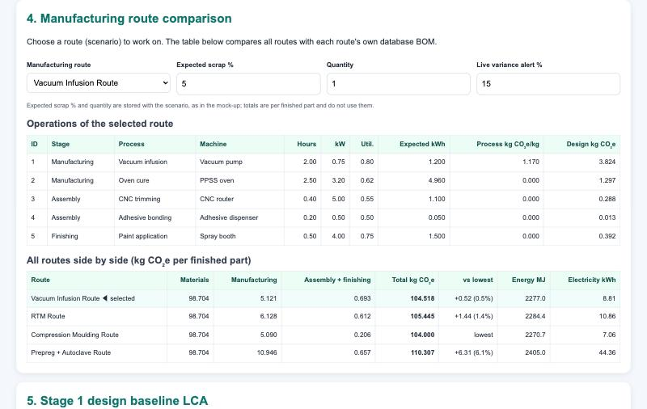

The project
A footprint you can check, not just claim.
- Focus
- Composite manufacturing
- Method
- Life cycle inventory (LCI) and assessment (LCA)
- Status
- Working demonstrator on example data
- Next
- Company data and validation
A life cycle assessment is only as good as its inventory: the list of everything that goes into making something. Today that inventory usually lives in spreadsheets, is built once at design stage and is never compared with what the factory actually uses.
This project replaces it with one connected record. Materials, processes, machines and energy readings are linked to each product. Every factor keeps its source and approval status, and every calculation can be inspected.
It works in two stages. First, a design baseline: the footprint of one finished part for each possible production route. Then production data: metered energy set against the plan, so the hotspots show themselves. AI helps explain results. It never alters a calculation, and never changes a process without engineering approval.
What has been built
A working demonstrator.

Compare production routes.
Four ways of making the same composite part, side by side, with the working shown for every number.
- Design against live energy, operation by operation
- Alerts when a machine uses more than planned
Walk the factory floor.
A 3D model of the line. Power flows in along cables, carbon rises from each machine, and material crates arrive sized by their footprint. You can walk it yourself and inspect any machine.
Open the digital twinUnderneath sits a connected PostgreSQL database with 22 tables, access control and more than 150 automated checks that compare every result against an independent calculation.
A first finding
In the example, materials carry 94% of the footprint.
Drag the sliders, or press play to watch what each lever is worth for one finished part.
Example composite part, vacuum infusion route, using the demonstrator's example factors. Not a verified result.
Roadmap
From demonstrator to validated platform.
Database structure, calculation rules and data-quality rules agreed.
DoneDatabase, dashboard and digital twin working on example data.
DoneMap the company workbook into the database with a checked, repeatable import.
NextReproduce one complete route and agree the numbers with the engineers.
NextProduction batches and energy meters, starting with simple file uploads.
PlannedControlled suggestions from validated results, always with engineering sign-off.
PlannedPeople involved